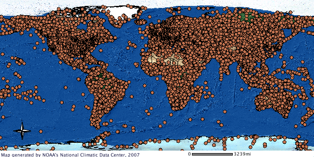

Monitoring networks and datasets
Buildings and Settlements
Global Permanent Monitoring Networks
Global (original) reference data sets
Global compilations of data sets
Elevation and Depth
Global Permanent Monitoring Networks
Global (original) reference data sets
Global compilations of data sets
Geology and Soils
Global Permanent Monitoring Networks
Global (original) reference data sets
Global compilations of data sets
Fine Root Ecology Database: FRED (compilation)
Description: Originally a plant root database but also contains some soil laboratory data and soil observations. Fully documented in Iversen et al. (2017).
- 🔗 Project website: https://roots.ornl.gov/
- 📂 Data download URL: https://doi.org/10.25581/ornlsfa.014/1459186
- 📰 Data license: https://roots.ornl.gov/guidelines/
- 📕 Iversen, C. M., McCormack, M. L., Powell, A. S., Blackwood, C. B., Freschet, G. T., Kattge, J., … & Violle, C. (2017). A global Fineâ€Root Ecology Database to address belowâ€ground challenges in plant ecology. New Phytologist, 215(1), 15-26.
- 📠Unique locations:
- 📋 Unique complete rows: 150,000
- 📠Tutorials & documentation: https://roots.ornl.gov/guidelines/
Global database of soil nematodes
Description: Raw soil nematode abundance data (6,825 samples) compiled by a large coalition of soil scientists / ecologists (Hoogen et al. 2020).
- 🔗 Project website: https://gee.ethz.ch/
- 📂 Data download URL: https://doi.org/10.6084/m9.figshare.c.4718003
- 📰 Data license: CC-BY-SA
- 📕 van den Hoogen, J., Geisen, S., Wall, D. H., Wardle, D. A., Traunspurger, W., de Goede, R. G., … & Crowther, T. W. (2020). A global database of soil nematode abundance and functional group composition. Scientific data, 7(1), 103.
- 📠Unique locations: 1,933 (1-km)
- 📋 Unique complete rows:
- 📠Tutorials & documentation:
Land Cover and Land Use
Global Permanent Monitoring Networks
FLUXNET training data
Description: FLUXNET contains 1496 site-years of data from 206 sites. At each FLUXNET site ecosystem-scale data on CO2, water, and energy exchange between the biosphere and the atmosphere, and other meteorological and biological measurements are recorded (Papale 2020).
- 🔗 Project website: https://fluxnet.org/
- 📂 Data download URL: https://fluxnet.org/data/data-policy/
- 🗠Data license: CC-BY (mainly)
- 📕 Pastorello, G., Trotta, C., Canfora, E., Chu, H., Christianson, D., Cheah, Y. W., … & Law, B. (2020). The FLUXNET2015 dataset and the ONEFlux processing pipeline for eddy covariance data. Scientific data, 7(1), 225.
- 📠Unique locations: 206
- 📋 Unique complete rows: +2 million
- 📠Tutorials & documentation: https://fluxnet.org/data/fluxnet2015-dataset/
Global (original) reference data sets
Global Land Cover Estimation (GLanCE) training data
Description: Global Land Cover Estimation (GLanCE) project project provides almost 2M training points covering from years 1984 to 2020) (Stanimirova et al. 2023).
- 🔗 Project website: https://sites.bu.edu/measures/
- 📂 Data download URL: https://doi.org/10.34911/rdnt.x4xfh3
- 📰 Data license: CC-BY
- 📕 Stanimirova, R., Tarrio, K., Turlej, K., McAvoy, K., Stonebrook, S., Hu, K. T., … & Friedl, M. A. (2023). A global land cover training dataset from 1984 to 2020. Scientific Data, 10(1), 879.
- 📠Unique locations: 2 million
- 📋 Unique complete rows: +20 million
- 📠Tutorials & documentation: https://sites.bu.edu/measures/tools/
Globe230k
Description: Globe230k is a benchmark dataset for Global Land Cover Mapping which includes cca 230,000 annotated images with a size of 512 × 512 and a spatial resolution of 1-m (Shi et al. 2023).

- 🔗 Project website:
- 📂 Data download URL: https://zenodo.org/doi/10.5281/zenodo.8429199
- 📰 Data license: CC-BY
- 📕 Shi, Q., He, D., Liu, Z., Liu, X., & Xue, J. (2023). Globe230k: A Benchmark Dense-Pixel Annotation Dataset for Global Land Cover Mapping. Journal of Remote Sensing, 3, 0078.
- 📠Unique locations: 6,500
- 📋 Unique complete rows: +1 billion
- 📠Tutorials & documentation:
Degree Confluence Project (DCP)
Description: Degree Confluence project is a citizen science project with volunteers visiting 1 by 1 degree grid nodes and then taking photographs and making observations. This data is also useful and used for global land cover mapping and similar (Qian et al. 2020).
- 🔗 Project website: http://confluence.org/
- 📂 Data download URL: https://www.orbitals.com/dcp/dcp3a.htm
- 🗠Data license: https://confluence.org/infodcp.php#copyright
- 📕 Qian, T., Kinoshita, T., Fujii, M., & Bao, Y. (2020). Analyzing the uncertainty of degree confluence project for validating global land-cover maps using reference data-based classification schemes. Remote Sensing, 12(16), 2589.
- 📠Unique locations: 1701
- 📋 Unique complete rows:
- 📠Tutorials & documentation:
Global compilations of data sets
Global Forest Biodiversity Initiative (GFBI)
Description: Global Forest Biodiversity Initiative serves voluntarly contributed forest plot data e.g. tree-level attributes such as species, DBH, and status (Liang et al. 2016).
- 🔗 Project website: http://www.gfbinitiative.org
- 📂 Data download URL: http://www.gfbinitiative.org/data
- 📰 Data license: GFBI Data Use Agreement
- 📕 Liang, J., T. W. Crowther, N. Picard, S. Wiser, M. Zhou, G. Alberti, E.-D. Schulze, and others (2016). Positive biodiversity-productivity relationship predominant in global forests. Science 354.
- 📠Unique locations:
- 📋 Unique complete rows: 777,125
- 📠Tutorials & documentation:
Population Distribution
Global Permanent Monitoring Networks
Global (original) reference data sets
Global compilations of data sets
Water
Global Permanent Monitoring Networks
Ocean Biodiversity Information System (OBIS)
Description: Collection of marine species occurrence records from original and 3rd party sources GBIF, FishBASE (Global Information System on Fishes) and similar (Moudrỳ and Devillers 2020).
- 🔗 Project website: https://obis.org/
- 📂 Data download URL: https://obis.org/data/access/
- 📰 Data license: https://manual.obis.org/access
- 📕 Moudrý, V., & Devillers, R. (2020). Quality and usability challenges of global marine biodiversity databases: An example for marine mammal data. Ecological Informatics, 56, 101051.
- 📠Unique locations:
- 📋 Unique complete rows: +57 million records
- 📠Tutorials & documentation: https://manual.obis.org/access
Global streamflow time series data (GRDC)
Description: Global Runoff Data Centre (GRDC) collected 35 years of monthly and daily river discharge data from cca 11,000 permanent stations (Burek and Smilovic 2023).
- 🔗 Project website: https://www.bafg.de/GRDC/
- 📂 Data download URL: https://portal.grdc.bafg.de/applications/public.html
- 📰 Data license: No commercial use of the data / No distribution of the entire database
- 📕 Burek, P., & Smilovic, M. (2023). The use of GRDC gauging stations for calibrating large-scale hydrological models. Earth System Science Data, 15(12), 5617-5629.
- 📠Unique locations: 10,739
- 📋 Unique complete rows: +1 million records
- 📠Tutorials & documentation: https://github.com/iiasa/CWATM_grdc_calibration_stations/
Global (original) reference data sets
Global Freshwater Quality Database (GEMStat)
Description: Global Freshwater Quality Database (GEMStat) provides data on the state and trend of global inland water quality. As operational part of the GEMS/Water Programme of the United Nations Environment Programme (UNEP), GEMStat is hosted by the GEMS/Water Data Centre (GWDC) within the International Centre for Water Resources and Global Change (ICWRGC). The download of water quality data from the Portal is currently restricted to a maximum of 675 stations. If you require larger datasets, such as global data, you can send a data request by filling out a form.

- 🔗 Project website: https://gemstat.org/
- 📂 Data download URL: https://portal.gemstat.org/
- 📰 Data license: https://gemstat.org/data-gemstat/
- 📕 .
- 📠Unique locations: 21,000
- 📋 Unique complete rows:
- 📠Tutorials & documentation:
Global compilations of data sets
Physical Infrastructure
Global Permanent Monitoring Networks
Global (original) reference data sets
Global compilations of data sets
Climate
Global Permanent Monitoring Networks
NOAA Global Surface Summary of the Day (GSOD)
Description: Contains daily data from over 9000 stations (data from 1973 to the present) on Mean temperature (.1 Fahrenheit) Mean dew point (.1 Fahrenheit) Mean sea level pressure (.1 mb) Mean station pressure (.1 mb) Mean visibility (.1 miles) Mean wind speed (.1 knots) Maximum sustained wind speed (.1 knots) Maximum wind gust (.1 knots) Maximum temperature (.1 Fahrenheit) Minimum temperature (.1 Fahrenheit) Precipitation amount (.01 inches) Snow depth (.1 inches) Indicator for occurrence of: Fog, Rain or Drizzle, Snow or Ice Pellets, Hail, Thunder and similar.

- 🔗 Project website: https://catalog.data.gov/dataset/global-surface-summary-of-the-day-gsod/
- 📂 Data download URL: https://www.ncei.noaa.gov/data/global-summary-of-the-day/archive/
- 📰 Data license:
- 📕 Sparks, A. H., Hengl, T., & Nelson, A. (2017). GSODR: global summary daily weather data in R. Journal of open source software, 2(10), 177.
- 📠Unique locations: +9000
- 📋 Unique complete rows:
- 📠Tutorials & documentation: https://docs.ropensci.org/GSODR/
Climate TRACE
Description: Climate TRACE provides an inventory of major source of greenhouse gas (GHG) emissions around the world and provides independently produced estimates of how much each emits (points and polygons) (Whitmee, Anton, and Haines 2023).

- 🔗 Project website: https://climatetrace.org/
- 📂 Data download URL: https://climatetrace.org/data/
- 🗠Data license: https://roots.ornl.gov/guidelines/
- 📕 Whitmee, S., Anton, B., & Haines, A. (2023). Accountability for carbon emissions and health equity. Bulletin of the World Health Organization, 101(2), 83.
- 📠Unique locations: 352 million emitting assets
- 📋 Unique complete rows: +1 billion
- 📠Tutorials & documentation: https://api.climatetrace.org/v4/swagger/
Biodiversity and Nature Conservation
Global Permanent Monitoring Networks
Ramsar Sites Information Service
Description: The Ramsar Sites Information Service (RSIS) provides online information on wetlands that have been designated as internationally important. There are over 2,000 “Ramsar Sites†on the territories of over 160 Contracting Parties across the world (McInnes et al. 2017).
- 🔗 Project website: https://rsis.ramsar.org/
- 📂 Data download URL: https://rsis.ramsar.org/geoserver/wfs
- 📰 Data license:
- 📕 McInnes, R. J., Simpson, M., Lopez, B., Hawkins, R., & Shore, R. (2017). Wetland ecosystem services and the Ramsar Convention: an assessment of needs. Wetlands, 37(1), 123-134.
- 📠Unique locations: 2000
- 📋 Unique complete rows:
- 📠Tutorials & documentation:
Global (original) reference data sets
Global compilations of data sets
Burek, Peter, and Mikhail Smilovic. 2023. “The Use of GRDC Gauging Stations for Calibrating Large-Scale Hydrological Models.†Earth System Science Data 15 (12): 5617–29. https://doi.org/10.5194/essd-15-5617-2023.
Hoogen, Johan van den, Stefan Geisen, Diana H Wall, David A Wardle, Walter Traunspurger, Ron GM de Goede, Byron J Adams, et al. 2020. “A Global Database of Soil Nematode Abundance and Functional Group Composition.†Scientific Data 7 (1): 103. https://doi.org/10.1038/s41597-020-0437-3.
Iversen, Colleen M, M Luke McCormack, A Shafer Powell, Christopher B Blackwood, Grégoire T Freschet, Jens Kattge, Catherine Roumet, et al. 2017. “A Global Fine-Root Ecology Database to Address Below-Ground Challenges in Plant Ecology.†New Phytologist 215 (1): 15–26. https://doi.org/10.1111/nph.14486.
Liang, Jingjing, Thomas W Crowther, Nicolas Picard, Susan Wiser, Mo Zhou, Giorgio Alberti, Ernst-Detlef Schulze, et al. 2016. “Positive Biodiversity-Productivity Relationship Predominant in Global Forests.†Science 354 (6309): aaf8957. https://doi.org/10.1126/science.aaf8957.
McInnes, Robert J, Matthew Simpson, Beatriz Lopez, Robbie Hawkins, and Robert Shore. 2017. “Wetland Ecosystem Services and the Ramsar Convention: An Assessment of Needs.†Wetlands 37 (1): 123–34. https://doi.org/10.1007/s13157-016-0849-1.
Moudrỳ, Vı́tězslav, and Rodolphe Devillers. 2020. “Quality and Usability Challenges of Global Marine Biodiversity Databases: An Example for Marine Mammal Data.†Ecological Informatics 56: 101051. https://doi.org/10.1016/j.ecoinf.2020.101051.
Papale, Dario. 2020. “Ideas and Perspectives: Enhancing the Impact of the FLUXNET Network of Eddy Covariance Sites.†Biogeosciences 17 (22): 5587–98. https://doi.org/10.5194/bg-17-5587-2020.
Pastorello, Gilberto, Carlo Trotta, Eleonora Canfora, Housen Chu, Danielle Christianson, You-Wei Cheah, Cristina Poindexter, et al. 2020. “The FLUXNET2015 Dataset and the ONEFlux Processing Pipeline for Eddy Covariance Data.†Scientific Data 7 (1): 225. https://doi.org/10.1038/s41597-020-0534-3.
Qian, Tana, Tsuguki Kinoshita, Minoru Fujii, and Yuhai Bao. 2020. “Analyzing the Uncertainty of Degree Confluence Project for Validating Global Land-Cover Maps Using Reference Data-Based Classification Schemes.†Remote Sensing 12 (16): 2589. https://doi.org/10.3390/rs12162589.
Shi, Qian, Da He, Zhengyu Liu, Xiaoping Liu, and Jingqian Xue. 2023. “Globe230k: A Benchmark Dense-Pixel Annotation Dataset for Global Land Cover Mapping.†Journal of Remote Sensing 3: 0078. https://doi.org/10.34133/remotesensing.0078.
Stanimirova, Radost, Katelyn Tarrio, Konrad Turlej, Kristina McAvoy, Sophia Stonebrook, Kai-Ting Hu, Paulo Arévalo, et al. 2023. “A Global Land Cover Training Dataset from 1984 to 2020.†Scientific Data 10 (1): 879. https://doi.org/10.1038/s41597-023-02798-5.
Whitmee, Sarah, Blanca Anton, and Andy Haines. 2023. “Accountability for Carbon Emissions and Health Equity.†Bulletin of the World Health Organization 101 (2): 83. https://doi.org/10.2471/BLT.22.289452.